Geometrically nonlinear van Karman Beam with internal resonance
Contents
von Karman beam with 1:3 internal resonance
In this example, we consider a clamped-pinned von Karman beam with a support spring at its midspan. The stiffness of the support spring is tund such that 1:3 internal resonance occurs between the first two bending modes. We then extract the forced response curve using SSM reduction.
clear all
Model Setup
nElements = 100;
[M,~,K,fnl,~,Outdof] = build_model(nElements);
outdof = Outdof(2); % the point at mid span
n = length(M);
Kc = K;
Building FE model Assembling M,C,K matrices Applying boundary conditions Solving undamped eigenvalue problem Getting nonlinearity coefficients Assembling Tensors Assembling external force vector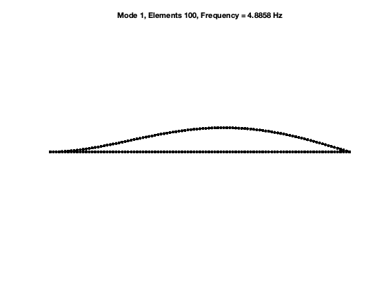
The beam is discretized with 100 elements and then 298 degrees-of-freedom. The dimension of phase space of the full system is 596. With the SSM reduction, the dimension of phase space will be reduced to four. Numerical experiments show that 1:3 near resonance is observed when the stiffness of the support spring is around 37. Next we set the stiffness to be 37 and then perform SSM reduction.
Dynamical System Setup
kLinear = 37; Kc(outdof,outdof) = K(outdof,outdof)+kLinear; % linear part kNonlinear = 0; % nonlinear part f3_new = fnl{2}; fnl_new = fnl; f3_new(outdof,outdof,outdof,outdof) = f3_new(outdof,outdof,outdof,outdof)+kNonlinear; % cubic nonlinerity fnl_new{2} = f3_new; C = (2e-4)/9*Kc; DS = DynamicalSystem(); set(DS,'M',M,'C',C,'K',Kc,'fnl',fnl_new); set(DS.Options,'Emax',5,'Nmax',10,'notation','multiindex');
Primiary resonance with IRs
Add forcing - a concentric harmonic force is applied at the midspan
f_0 = zeros(n,1); f_0(outdof) = 1000; kappas = [-1; 1]; epsilon = 0.02; coeffs = epsilon * [f_0 f_0]/2; DS.add_forcing(coeffs, kappas);
Create SSM
S = SSM(DS); set(S.Options, 'reltol', 0.8,'notation','multiindex')
Extract FRC
Here we use the extract_FRC routine to obtain the forced response curve over 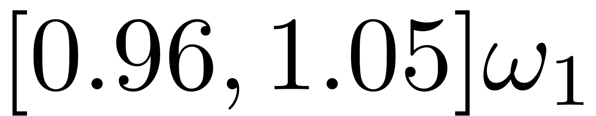.
om = eigs(Kc,M,2,'smallestabs'); om = sqrt(om); freqRange = [0.96 1.05]*om(1); order = 7; set(S.FRCOptions, 'nCycle',50000); set(S.FRCOptions, 'initialSolver','forward'); set(S.contOptions, 'h_max', 0.2, 'PtMX', 1000, 'ItMX',20); set(S.FRCOptions, 'omegaSampStyle','cocoBD'); set(S.FRCOptions, 'method','continuation ep','outdof',Outdof'); FRC = S.extract_FRC('freq', freqRange, order);
Due to high-dimensionality, we compute only the first 5 eigenvalues with the smallest magnitude. These would also be used to compute the spectral quotients
Assuming a proportional damping hypthesis with symmetric matrices
modal damping ratio for 1 mode is 3.688485e-04
modal damping ratio for 2 mode is 1.106767e-03
modal damping ratio for 3 mode is 2.309722e-03
modal damping ratio for 4 mode is 3.944138e-03
modal damping ratio for 5 mode is 6.019377e-03
The first 10 nonzero eigenvalues are given as
1.0e+02 *
-0.0001 + 0.3320i
-0.0001 - 0.3320i
-0.0011 + 0.9961i
-0.0011 - 0.9961i
-0.0048 + 2.0787i
-0.0048 - 2.0787i
-0.0140 + 3.5497i
-0.0140 - 3.5497i
-0.0326 + 5.4173i
-0.0326 - 5.4173i
The master subspace has internal resonances: [1 1 3 3]
*****************************************
Calculating FRC using SSM with master subspace: [1 2 3 4]
The master subspace contains the following eigenvalues
lambda1 == - 0.0122444 + 33.1964i
lambda2 == (-0.0122444) - 33.1964i
lambda3 == - 0.110244 + 99.609i
lambda4 == (-0.110244) - 99.609i
(near) outer resonance detected for the following combinations of master eigenvalues
They are in resonance with the following eigenvalues of the slave subspace
0*lambda1 + 0*lambda2 + 2*lambda3 + 0*lambda4 == - 0.4801333 + 207.8744i
1*lambda1 + 0*lambda2 + 2*lambda3 + 0*lambda4 == - 0.4801333 + 207.8744i
0*lambda1 + 0*lambda2 + 3*lambda3 + 1*lambda4 == - 0.4801333 + 207.8744i
..
3*lambda1 + 1*lambda2 + 0*lambda3 + 6*lambda4 == (-3.260961) - 541.7341i
sigma_out = 266
(near) inner resonance detected for the following combination of master eigenvalues:
0*lambda1 + 2*lambda2 + 1*lambda3 + 0*lambda4 == lambda1
1*lambda1 + 0*lambda2 + 1*lambda3 + 1*lambda4 == lambda1
2*lambda1 + 1*lambda2 + 0*lambda3 + 0*lambda4 == lambda1
..
6*lambda1 + 0*lambda2 + 0*lambda3 + 3*lambda4 == lambda4
sigma_in = 266
Due to (near) outer resonance, the exisitence of the manifold is questionable and the underlying computation may suffer.
Attempting manifold computation
Manifold computation time at order 2 = 00:00:00
Estimated memory usage at order 2 = 9.23E-01 MB
Manifold computation time at order 3 = 00:00:00
Estimated memory usage at order 3 = 2.45E+00 MB
Manifold computation time at order 4 = 00:00:00
Estimated memory usage at order 4 = 3.84E+00 MB
Manifold computation time at order 5 = 00:00:01
Estimated memory usage at order 5 = 9.04E+00 MB
Manifold computation time at order 6 = 00:00:05
Estimated memory usage at order 6 = 1.38E+01 MB
Manifold computation time at order 7 = 00:00:16
Estimated memory usage at order 7 = 2.71E+01 MB
Run='freqSubint1.ep': Continue equilibria along primary branch.
STEP DAMPING NORMS COMPUTATION TIMES
IT SIT GAMMA ||d|| ||f|| ||U|| F(x) DF(x) SOLVE
0 4.31e-03 4.95e+01 0.0 0.0 0.0
1 1 1.00e+00 1.03e-02 8.63e-05 4.95e+01 0.0 0.0 0.0
2 1 1.00e+00 1.26e-05 1.13e-08 4.95e+01 0.0 0.0 0.0
3 1 1.00e+00 5.11e-09 3.74e-16 4.95e+01 0.0 0.1 0.0
STEP TIME ||U|| LABEL TYPE om rho1 rho2 th1 th2 eps
0 00:00:00 4.9522e+01 1 EP 3.3196e+01 4.8105e-01 2.1705e-02 6.2609e+00 9.1796e+00 1.0000e+00
10 00:00:01 4.8851e+01 2 3.2653e+01 3.4855e-01 2.6979e-03 6.2693e+00 9.3302e+00 1.0000e+00
20 00:00:01 4.8093e+01 3 3.2075e+01 2.4117e-01 5.0683e-04 6.2737e+00 9.3686e+00 1.0000e+00
24 00:00:01 4.7821e+01 4 EP 3.1869e+01 2.1324e-01 3.0186e-04 6.2748e+00 9.3765e+00 1.0000e+00
STEP TIME ||U|| LABEL TYPE om rho1 rho2 th1 th2 eps
0 00:00:02 4.9522e+01 5 EP 3.3196e+01 4.8105e-01 2.1705e-02 6.2609e+00 9.1796e+00 1.0000e+00
10 00:00:02 4.9597e+01 6 3.3428e+01 5.3169e-01 9.4532e-02 6.2079e+00 8.5534e+00 1.0000e+00
20 00:00:03 4.9267e+01 7 SN 3.3523e+01 5.2095e-01 1.4014e-01 6.1398e+00 7.1645e+00 1.0000e+00
20 00:00:03 4.9267e+01 8 FP 3.3523e+01 5.2095e-01 1.4012e-01 6.1398e+00 7.1639e+00 1.0000e+00
20 00:00:03 4.9262e+01 9 3.3523e+01 5.2100e-01 1.3947e-01 6.1410e+00 7.1486e+00 1.0000e+00
22 00:00:03 4.9213e+01 10 SN 3.3522e+01 5.2356e-01 1.2800e-01 6.1605e+00 6.9623e+00 1.0000e+00
22 00:00:03 4.9213e+01 11 FP 3.3522e+01 5.2361e-01 1.2786e-01 6.1607e+00 6.9606e+00 1.0000e+00
30 00:00:04 4.9260e+01 12 3.3650e+01 5.8432e-01 4.8270e-02 6.2464e+00 6.4127e+00 1.0000e+00
37 00:00:04 4.9500e+01 13 HB 3.3841e+01 6.3662e-01 3.2400e-02 6.2518e+00 6.3167e+00 1.0000e+00
39 00:00:04 4.9746e+01 14 HB 3.4028e+01 6.8393e-01 2.7200e-02 6.2516e+00 6.2775e+00 1.0000e+00
40 00:00:04 4.9992e+01 15 3.4211e+01 7.2881e-01 2.4882e-02 6.2503e+00 6.2541e+00 1.0000e+00
45 00:00:05 5.0867e+01 16 EP 3.4856e+01 8.7616e-01 2.3015e-02 6.2444e+00 6.2074e+00 1.0000e+00
Total time spent on FRC computation upto O(7) = 00:01:15
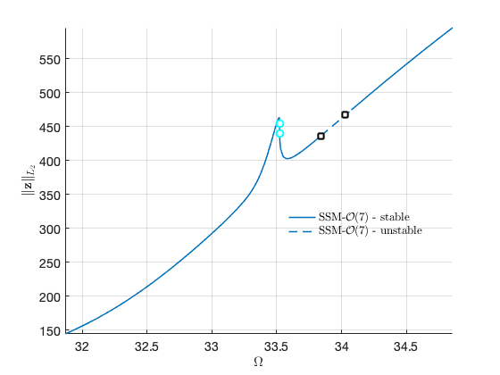 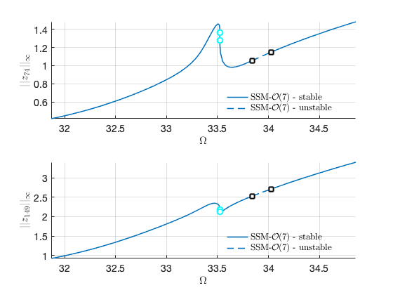 As an alternative, we can use SSM-ep toolbox to obtain the curve. We also change coordinate representation to Cartesian. The two coordinates yield the same results.
set(S.FRCOptions, 'coordinates', 'cartesian'); set(S.contOptions, 'h_min',1e-2,'h_max',0.1); S.SSM_isol2ep('isol',[1 2 3 4],order,[1 3],'freq',freqRange,Outdof);
The master subspace contains the following eigenvalues
lambda1 == - 0.0122444 + 33.1964i
lambda2 == (-0.0122444) - 33.1964i
lambda3 == - 0.110244 + 99.609i
lambda4 == (-0.110244) - 99.609i
(near) outer resonance detected for the following combinations of master eigenvalues
They are in resonance with the following eigenvalues of the slave subspace
0*lambda1 + 0*lambda2 + 2*lambda3 + 0*lambda4 == - 0.4801333 + 207.8744i
1*lambda1 + 0*lambda2 + 2*lambda3 + 0*lambda4 == - 0.4801333 + 207.8744i
0*lambda1 + 0*lambda2 + 3*lambda3 + 1*lambda4 == - 0.4801333 + 207.8744i
..
3*lambda1 + 1*lambda2 + 0*lambda3 + 6*lambda4 == (-3.260961) - 541.7341i
sigma_out = 266
(near) inner resonance detected for the following combination of master eigenvalues:
0*lambda1 + 2*lambda2 + 1*lambda3 + 0*lambda4 == lambda1
1*lambda1 + 0*lambda2 + 1*lambda3 + 1*lambda4 == lambda1
2*lambda1 + 1*lambda2 + 0*lambda3 + 0*lambda4 == lambda1
0*lambda1 + 2*lambda2 + 2*lambda3 + 1*lambda4 == lambda1
..
6*lambda1 + 0*lambda2 + 0*lambda3 + 3*lambda4 == lambda4
sigma_in = 266
Due to (near) outer resonance, the exisitence of the manifold is questionable and the underlying computation may suffer.
Attempting manifold computation
Manifold computation time at order 2 = 00:00:00
Estimated memory usage at order 2 = 9.23E-01 MB
Manifold computation time at order 3 = 00:00:00
Estimated memory usage at order 3 = 2.45E+00 MB
Manifold computation time at order 4 = 00:00:00
Estimated memory usage at order 4 = 3.84E+00 MB
Manifold computation time at order 5 = 00:00:01
Estimated memory usage at order 5 = 9.04E+00 MB
Manifold computation time at order 6 = 00:00:05
Estimated memory usage at order 6 = 1.38E+01 MB
Manifold computation time at order 7 = 00:00:15
Estimated memory usage at order 7 = 2.71E+01 MB
Run='isol.ep': Continue equilibria along primary branch.
STEP DAMPING NORMS COMPUTATION TIMES
IT SIT GAMMA ||d|| ||f|| ||U|| F(x) DF(x) SOLVE
0 2.11e-03 4.70e+01 0.0 0.0 0.0
1 1 1.00e+00 1.85e-03 5.53e-06 4.70e+01 0.0 0.0 0.0
2 1 1.00e+00 5.43e-06 4.27e-11 4.70e+01 0.0 0.0 0.0
3 1 1.00e+00 4.54e-11 6.17e-16 4.70e+01 0.0 0.0 0.0
STEP TIME ||U|| LABEL TYPE om Rez1 Rez2 Imz1 Imz2 eps
0 00:00:00 4.6962e+01 1 EP 3.3196e+01 4.8093e-01 -2.1056e-02 -1.0738e-02 5.2691e-03 1.0000e+00
10 00:00:00 4.5988e+01 2 3.2509e+01 3.1776e-01 -1.7187e-03 -4.0086e-03 1.4037e-04 1.0000e+00
20 00:00:00 4.5081e+01 3 EP 3.1869e+01 2.1323e-01 -3.0150e-04 -1.7930e-03 1.4579e-05 1.0000e+00
STEP TIME ||U|| LABEL TYPE om Rez1 Rez2 Imz1 Imz2 eps
0 00:00:00 4.6962e+01 4 EP 3.3196e+01 4.8093e-01 -2.1056e-02 -1.0738e-02 5.2691e-03 1.0000e+00
10 00:00:01 4.7313e+01 5 3.3443e+01 5.3055e-01 -5.7972e-02 -4.5720e-02 8.5635e-02 1.0000e+00
20 00:00:01 4.7394e+01 6 3.3500e+01 5.2364e-01 -2.8209e-03 -7.2212e-02 1.3750e-01 1.0000e+00
30 00:00:01 4.7423e+01 7 3.3521e+01 5.1583e-01 6.6039e-02 -7.9246e-02 1.2951e-01 1.0000e+00
35 00:00:02 4.7425e+01 8 SN 3.3523e+01 5.1560e-01 8.9154e-02 -7.4436e-02 1.0812e-01 1.0000e+00
35 00:00:02 4.7425e+01 9 FP 3.3523e+01 5.1560e-01 8.9155e-02 -7.4436e-02 1.0812e-01 1.0000e+00
40 00:00:02 4.7425e+01 10 SN 3.3522e+01 5.1963e-01 9.9601e-02 -6.4072e-02 8.0390e-02 1.0000e+00
40 00:00:02 4.7425e+01 11 FP 3.3522e+01 5.1963e-01 9.9601e-02 -6.4072e-02 8.0388e-02 1.0000e+00
40 00:00:02 4.7425e+01 12 3.3522e+01 5.2106e-01 9.9953e-02 -6.1415e-02 7.4517e-02 1.0000e+00
50 00:00:03 4.7458e+01 13 3.3546e+01 5.4515e-01 7.8689e-02 -3.4473e-02 2.6564e-02 1.0000e+00
60 00:00:03 4.7685e+01 14 3.3706e+01 6.0011e-01 4.1061e-02 -2.0226e-02 3.6559e-03 1.0000e+00
62 00:00:03 4.7877e+01 15 HB 3.3841e+01 6.3630e-01 3.2382e-02 -1.9990e-02 1.0860e-03 1.0000e+00
65 00:00:04 4.8142e+01 16 HB 3.4028e+01 6.8359e-01 2.7199e-02 -2.1625e-02 -1.5561e-04 1.0000e+00
70 00:00:04 4.8659e+01 17 3.4391e+01 7.7114e-01 2.3730e-02 -2.6536e-02 -1.0857e-03 1.0000e+00
77 00:00:04 4.9320e+01 18 EP 3.4856e+01 8.7550e-01 2.2949e-02 -3.3995e-02 -1.7424e-03 1.0000e+00
FRC in parametrisation space:
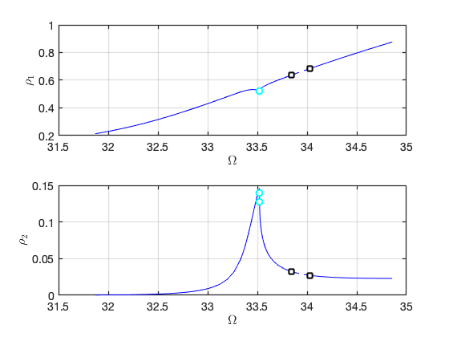 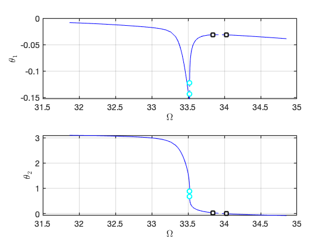FRC in physical space:
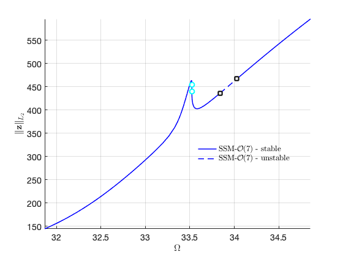 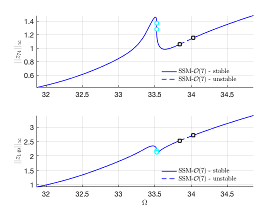Quasi-periodic response
In the above continuation run of fixed points, two Hopf bifurcation points were observed. We switch the continuation of fixed points to the continuation of periodic orbits that are born out of the bifurcation points. Specifically, we use SSM-po toolbox to do that.
HBlab = 15; set(S.contOptions, 'h_max',0.2,'PtMX',90,'NAdapt',2, 'bi_direct', false,'NSV',2); % continuation setting S.SSM_HB2po('po','isol',HBlab,'freq',freqRange,[Outdof; Outdof+n],'saveICs');
Run='po.po': Continue periodic orbits born from a HB point with label 15 of run isol.
STEP DAMPING NORMS COMPUTATION TIMES
IT SIT GAMMA ||d|| ||f|| ||U|| F(x) DF(x) SOLVE
0 6.62e-06 4.88e+01 0.0 0.0 0.0
1 1 1.00e+00 3.71e-06 3.13e-12 4.88e+01 0.0 0.0 0.0
2 1 1.00e+00 8.72e-11 5.63e-15 4.88e+01 0.0 0.0 0.0
STEP TIME ||U|| LABEL TYPE om po.period eps
0 00:00:00 4.8786e+01 1 EP 3.3841e+01 5.8471e+00 1.0000e+00
2 00:00:00 4.8787e+01 2 3.3842e+01 5.8459e+00 1.0000e+00
..
90 00:00:22 4.9013e+01 47 EP 3.3907e+01 5.9379e+00 1.0000e+00
Constructing torus in reduced dynamical system
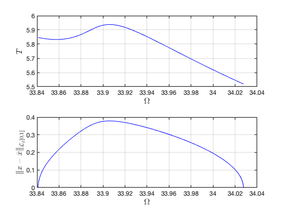 Visualization of torus at (omega,epsilon)=(3.390586e+01,1) FRCs from ='po.po': generating torus in physical domain.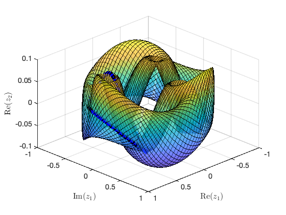 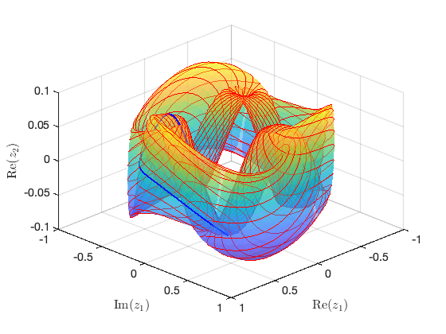
Plot of FRC for quasi-periodic orbits
calculate the amplitude of qausi-periodic orbits
runid = 'po'; samps = 1:2:33; bd = coco_bd_read([runid,'.po']); lab = coco_bd_labs(bd, 'FP'); labs = [1:lab-1 lab+1]; lab = numel(labs); x1_tr = zeros(lab,1); x2_tr = zeros(lab,1); om_tr = zeros(lab,1); st = false(lab,1); for i=1:lab sol = SSM_po_read_solution(runid,labs(i)); st(i) = sol.st; om_tr(i) = sol.om; x1i = sol.xTr(:,1,:); x2i = sol.xTr(:,2,:); x1_tr(i) = norm(x1i(:),'inf'); x2_tr(i) = norm(x2i(:),'inf'); end
background periodic response
wdir = fullfile(pwd,'data','isol.ep','SSMep.mat'); SSMRes = load(wdir); FRC = SSMRes.FRC;
plot results of periodic reponse and tori in the same figure
ST = cell(2,1);
ST{1} = {'b--','LineWidth',2}; % unstable
ST{2} = {'b-','LineWidth',2}; % stable
legs = 'SSM-po-unstable';
legu = 'SSM-po-stable';
thm = struct();
thm.SN = {'LineStyle', 'none', 'LineWidth', 2, ...
'Color', 'cyan', 'Marker', 'o', 'MarkerSize', 8, 'MarkerEdgeColor', ...
'cyan', 'MarkerFaceColor', 'white'};
thm.HB = {'LineStyle', 'none', 'LineWidth', 2, ...
'Color', 'black', 'Marker', 's', 'MarkerSize', 8, 'MarkerEdgeColor', ...
'black', 'MarkerFaceColor', 'white'};
SNidx = FRC.SNidx;
HBidx = FRC.HBidx;
FRC.st = double(FRC.st);
FRC.st(HBidx) = nan;
FRC.st(SNidx) = nan;
figure;
subplot(2,1,1); hold on
plot_stab_lines(FRC.om,FRC.Aout_frc(:,1),FRC.st,ST,legs,legu);
SNfig = plot(FRC.om(SNidx),FRC.Aout_frc(SNidx,1),thm.SN{:});
set(get(get(SNfig,'Annotation'),'LegendInformation'),...
'IconDisplayStyle','off');
HBfig = plot(FRC.om(HBidx),FRC.Aout_frc(HBidx,1),thm.HB{:});
set(get(get(HBfig,'Annotation'),'LegendInformation'),...
'IconDisplayStyle','off');
ylabel('$||w_{0.25l}||_{\infty}$','Interpreter','latex');
set(gca,'FontSize',14);
grid on, axis tight;
legend boxoff;
subplot(2,1,2); hold on
plot_stab_lines(FRC.om,FRC.Aout_frc(:,2),FRC.st,ST,legs,legu);
SNfig = plot(FRC.om(SNidx),FRC.Aout_frc(SNidx,2),thm.SN{:});
set(get(get(SNfig,'Annotation'),'LegendInformation'),...
'IconDisplayStyle','off');
HBfig = plot(FRC.om(HBidx),FRC.Aout_frc(HBidx,2),thm.HB{:});
set(get(get(HBfig,'Annotation'),'LegendInformation'),...
'IconDisplayStyle','off');
xlabel('$\Omega$','Interpreter','latex');
ylabel('$||w_{0.5l}||_{\infty}$','Interpreter','latex');
grid on;
figure(gcf);
subplot(2,1,1);
plot(om_tr(st), x1_tr(st), 'o','MarkerSize', 8, 'MarkerEdgeColor', ...
'blue', 'MarkerFaceColor', 'blue','DisplayName','SSM-tor-stable');
plot(om_tr(~st), x1_tr(~st), 'o','MarkerSize', 8, 'MarkerEdgeColor', ...
'red', 'MarkerFaceColor', 'red','DisplayName','SSM-tor-unstable');
lowb = 0.9*min(FRC.Aout_frc(HBidx,1));
upb = 1.05*max(x1_tr);
axis([min(FRC.om(HBidx))-0.05,max(FRC.om(HBidx))+0.05,lowb,upb]);
subplot(2,1,2);
plot(om_tr(st), x2_tr(st), 'o','MarkerSize', 8, 'MarkerEdgeColor', ...
'blue', 'MarkerFaceColor', 'blue','DisplayName','SSM-tor-stable');
plot(om_tr(~st), x2_tr(~st), 'o','MarkerSize', 8, 'MarkerEdgeColor', ...
'red', 'MarkerFaceColor', 'red','DisplayName','SSM-tor-unstable');
lowb = 0.9*min(FRC.Aout_frc(HBidx,2));
upb = 1.05*max(x2_tr);
axis([min(FRC.om(HBidx))-0.05,max(FRC.om(HBidx))+0.05,lowb,upb]);
set(gca,'FontSize',14);
legend boxoff;
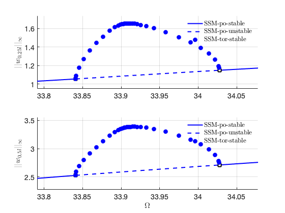